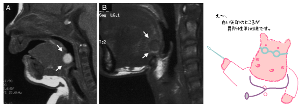

|
Lesson15 : 異所性甲状腺
15-1 異所性甲状腺について
お母さんのおなかの中にいる赤ちゃんの甲状腺は、はじめ舌のつけ根の部分にあり、ここから甲状舌管という管をつたって正しい位置まで移動します。この移動が、途中で止まってしまい、正しい位置にない状態が異所性甲状腺です。
甲状腺が正しい位置にないために、非常に小さく働きが悪い場合や、ほとんど普通の人と同じ機能をもっている場合など、その状態はさまざまです。

FIG. 4. Sagittal T1-weighted MRI in patients 1 (A) and 8 (B). The lingual
thyroid gland is shown as a rounded mass lesion in the base of the tongue (white
arrow). 白い矢印が舌根部の異所性甲状腺
Hisashi Ohnishi, Hirokazu Sato, Hiromasa Noda, Hiroaki Inomata and Nozomu Sasaki：Color
Doppler ultrasonography: diagnosis of ectopic thyroid gland in patients with
congenital hypothyroidism caused by thyroid dysgenesis. J Clin Endocrinol Metab.
2003 Nov;88(11):5145-9.
異所性甲状腺のために甲状腺機能低下症となっていると診断された場合、長期にわたりチラーヂンSを服用する治療を続けなくてはなりません。基本的には生涯にわたり、チラーヂンSの服用が必要となります。
異所性甲状腺は、多くの場合、舌のつけ根近く（舌根部）にあることが多いのですが、これを手術で正常な位置に移しても、甲状腺の機能が正常に戻るということはありません。これは、しばしば誤解されやすいので、しっかりと理解しておきましょう。